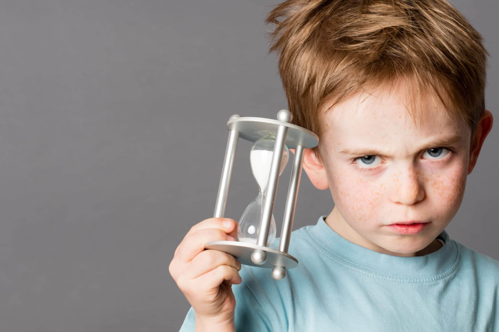

"מי שיש לו סבלנות יכול להשיג כל מה שירצה" (בנג'מין פרנקלין)
חזרתם הביתה אחרי יום עבודה ארוך ותובעני. הנעליים זרוקות בסלון, הצעצועים מפוזרים בכל הבית, מחדרי הילדים נשמעות צעקות — או כל סיטואציה אחרת שמוחקת את החיוך העייף מפניכם ומפנה את מקומה לכעס. ואיפה הסבלנות?
האם שמתם לב לשורש המילה סבלנות? ס.ב.ל — מי הסובל? כשאנו חסרי סבלנות אנו יוצרים סבל. ילדיכם הם מקור האושר והשמחה, הם חכמים, סקרנים, אוהבים ומחבקים, אך פעמים רבות הם גם דורשים, מייללים, צועקים ורבים — חלק ממקורות העצבנות, הכעס וחוסר הסבלנות שלכם.
חוסר סבלנות זוהי תכונה אנושית. פעמים רבות אתם מתוסכלים שהדברים לא נראים או נעשים כפי שאתם רוצים — ואז מאבדים סבלנות. חשוב לזכור שבתהליך חינוכי ההורים קודם כל משמשים דוגמה אישית. האחריות כולה מוטלת עליכם — יש צורך להתאזר בהרבה סבלנות כדי שילדיכם יגדלו ויתפתחו להיות אנשים סבלניים.
הורים רבים שמגיעים אליי להדרכה מתלוננים על חוסר הסבלנות של הילד: "הכל הוא רוצה כאן ועכשיו ומיד!" אנו חיים בחברה שקצב החיים בה הוא מאוד מהיר. את הארוחה נחמם במיקרו תוך שניות, בלחיצת כפתור אנו יכולים להוריד כל אפליקציה — לא נדרשת מיומנות של סבלנות ויש צורך לפתח אותה.
התפתחות רגשית וחברתית אצל ילדים צעירים מתרחשת באופן טבעי מתוך המפגש והאינטראקציה של הילד עם האנשים שסביבו. הסבלנות תלויה במידה רבה ביכולתו של הילד לדחות סיפוקים ולהתמודד עם תסכול. עליכם לזמן לילד התמודדויות שיאפשרו לו לפתח מיומנויות אלה.
מיום היוולדם אתם נענים לכל צרכיהם מידית. בדרך כלל משתדלים להימנע מעימותים, מוותרים בקלות כדי שלא יבכו, רוצים שיהיו תמיד שמחים. מתי לימדתם אותם להתאפק או להמתין? איך יפתחו סבלנות?
הורים רבים נמצאים כיום תחת לחץ כבד. קצב החיים המהיר, הדרישות במקום העבודה והרצון להתקדם ולהצליח מול הצורך והרצון להיות הורים טובים — יוצרים אצל ההורה הרבה סטרס ועייפות. הורה עייף ומותש יתקשה לגלות סבלנות כלפי ילדיו.
אז מה עושים?
זכרו שאצל ילדים צעירים ההתפתחות הרגשית היא בתחילתה ותפקידכם לזמן לילד מצבים להתמודדות ופיתוח מיומנויות של איפוק, המתנה והתמודדות עם תסכול. עליכם לגלות הרבה סבלנות ועקביות בתהליך ולעודד את הילד גם כשהוא מתקשה.
עליכם להיות מודעים לעצמכם ולגייס את כל הסבלנות הנדרשת. שאלו את עצמכם: האם בהתנהגות שלנו אנחנו מודל לסבלנות? ילדיכם לומדים הרבה יותר מתוך ההתנהגות שלכם מאשר מההטפות וההסברים שלכם.
מומלץ לכל הורה למצוא זמן לעצמו, שבו הוא ממלא מצברים ומטעין את עצמו.
אורית.
מעוניינים לדעת עוד? אורית זמינה לשאלות ופגישות ייעוץ.
צרו קשר